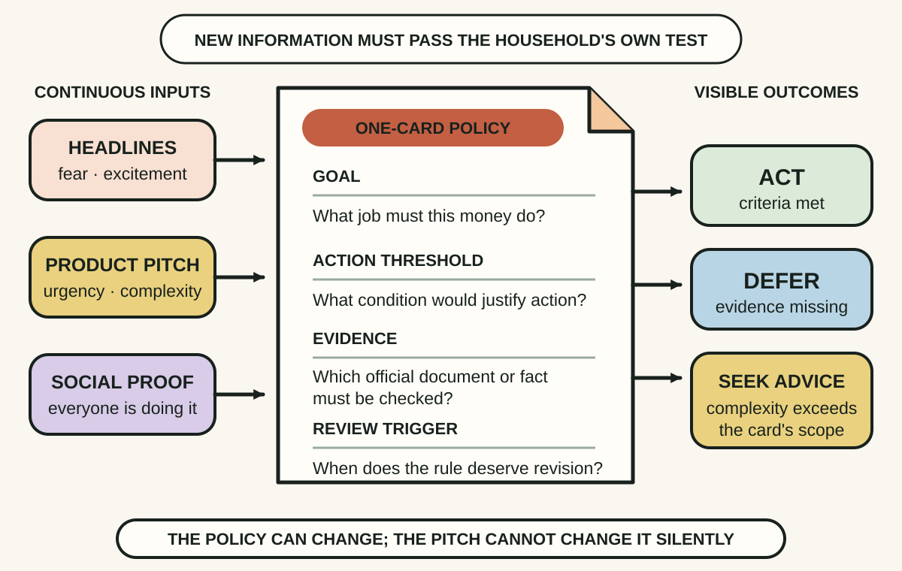
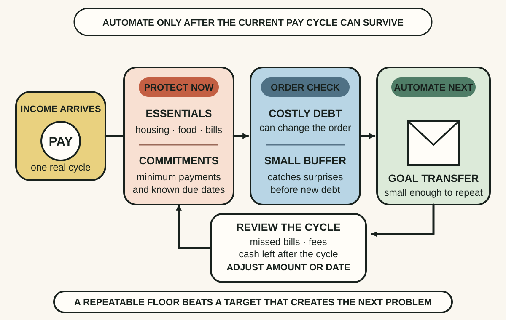
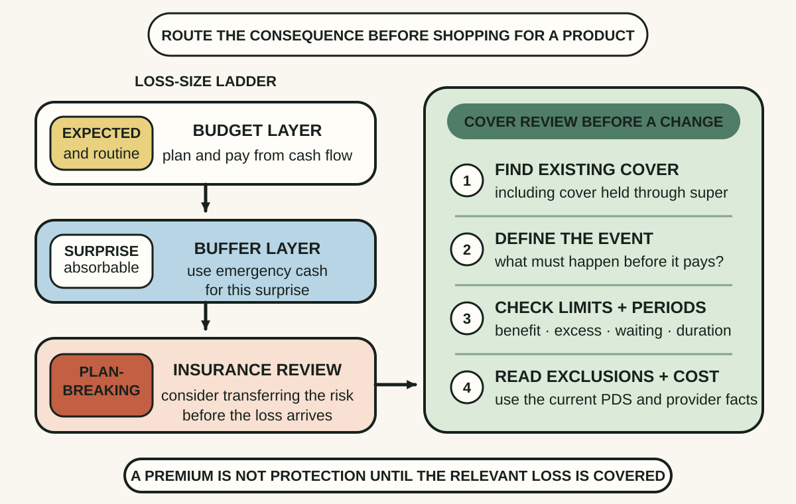

Daily lesson ·
The Index Card
Turn personal finance from a stream of product decisions into a small visible system: write the rules, automate a survivable savings habit and protect the losses that could break the plan.
Idea 1
Put the rules where noise cannot move them #
The idea
Olen and Pollack argue that the durable core of personal finance is simple enough to fit on an index card. The point is not that every household is simple. It is that a short set of prior rules can stop each headline, sales pitch or market mood from becoming a fresh decision.
Their card makes the system inspectable. A rule can state the goal, the trigger for action, the evidence required and when to review it. That structure also exposes advice that mainly creates urgency, complexity or a reason to buy before the household's own constraints are clear.

Why it matters
Financial noise is continuous, while attention and willpower are limited. A visible rule set reduces improvisation and makes it easier to notice when a persuasive message has quietly changed the decision criteria.
Apply it today
Choose one recurring money decision and write the goal it serves in one line.
Add three fields: the condition that would justify action, the evidence you would check and the date or event that should trigger review.
Caveat or failure mode
A small card cannot calculate an appropriate product, solve hardship or replace licensed advice for complex tax, insurance, estate or investment needs. Simplicity is useful only when it makes important constraints visible rather than deleting them.
Idea 2
Automate a savings floor you can survive #
The idea
The authors argue for regular saving and for controlling costly debt, but they also revised the original card's 20 percent saving line to a 10 to 20 percent long-term aim because the higher number is impossible for many households. The deeper mechanism is consistency, not moral virtue attached to one percentage.
Automation moves the chosen amount soon after income arrives, before repeated small decisions compete for it. A useful system still protects essential bills, minimum debt payments and a modest emergency buffer, then increases the transfer when real cash flow shows that the amount is sustainable.

Why it matters
A savings plan that depends on remembering what remains at month end competes with every intervening demand. A modest automatic floor creates a repeatable default and produces better evidence about capacity than an ambitious target that repeatedly fails.
Apply it today
Review one recent pay cycle and mark essentials, minimum debt commitments and the amount of readily available emergency cash.
Write one affordable transfer candidate and a review date. Do not activate it until you have checked that the sequence will not cause a missed bill, fee or avoidable high-cost debt.
Caveat or failure mode
No saving percentage fits every income, debt load or life stage. People facing arrears, unsafe circumstances or financial hardship may need immediate support and a different sequence. Automation can also cause fees when timing or balances are wrong, so it needs monitoring rather than blind permanence.
Idea 3
Protect the loss that would break the plan #
The idea
Olen and Pollack expanded the original card to include insurance because a savings and investment plan can be undone by a loss too large for ordinary cash flow. Insurance is most useful when it transfers a defined risk that would otherwise damage housing, income, dependants or the plan's ability to continue.
Protection still needs inspection. The policy has to cover the relevant event, for a useful amount and period, with exclusions, waiting periods, premiums and excesses the household understands. Existing cover, including cover held through Australian super, should be found before a duplicate product is added.

Why it matters
A premium can feel like protection while a duplicate policy, narrow definition or inadequate limit leaves the important loss exposed. Mapping the risk to the existing layer makes both gaps and unnecessary overlap visible.
Apply it today
Choose one large financial risk, such as loss of income, major property damage or harm to a dependant, and write the consequence the household could not absorb.
Locate the current policy or super statement and record only four facts: covered event, benefit or limit, major exclusion or waiting period and next review date. Do not buy or cancel cover during the audit.
Caveat or failure mode
Insurance needs, definitions, underwriting and affordability are personal and can require licensed advice. A larger premium does not prove better cover, and self-insuring every loss can be dangerous when the possible consequence exceeds available resources. Read the current PDS and confirm details with the provider.
Knowledge check · 6 questions
Learning check
Answer all 6, then check your answers. Your first result stays in this browser, and each explanation appears after you check. A 3-question review can appear on the homepage from tomorrow.
6 questions not yet answered.
Today's experiment · 10 minutes
Draft a one-card money system
- Divide one card or small page into three rows: Decide, Automate and Protect.
- In Decide, write one recurring money choice plus its goal, evidence threshold and review trigger.
- In Automate, write one affordable transfer candidate and the essential bill or costly debt that must remain protected.
- In Protect, name one plan-breaking loss and the document that shows whether it is currently covered.
- Circle one unanswered question and schedule a no-transaction check using an official source, current statement or PDS.
Observable result: You finish with one visible decision rule, one automation candidate, one protection check and one evidence task, without buying, selling or cancelling anything.
Retrieval practice
Spaced recall
- From The Four Pillars of Investing: how do a goal's timing, liquidity need and affordable loss constrain a product choice?
- From The Checklist Manifesto: where would a short monthly pause stop one important money-system check from being skipped?
Verification
Source notes
These links support the attributed claims and edition details; applications and extensions are labelled in the lesson.
- Penguin Random House: The Index Card publication details
- Penguin Random House Canada: authorised excerpt and revision context
- Australian Government Moneysmart: How to do a budget and automate saving
- Australian Government Moneysmart: Save for an emergency fund
- Australian Government Moneysmart: Get debt under control
- Australian Government Moneysmart: Insurance overview
- Australian Government Moneysmart: How life insurance works
- Australian Government Moneysmart: Insurance through super
One-sentence takeaway